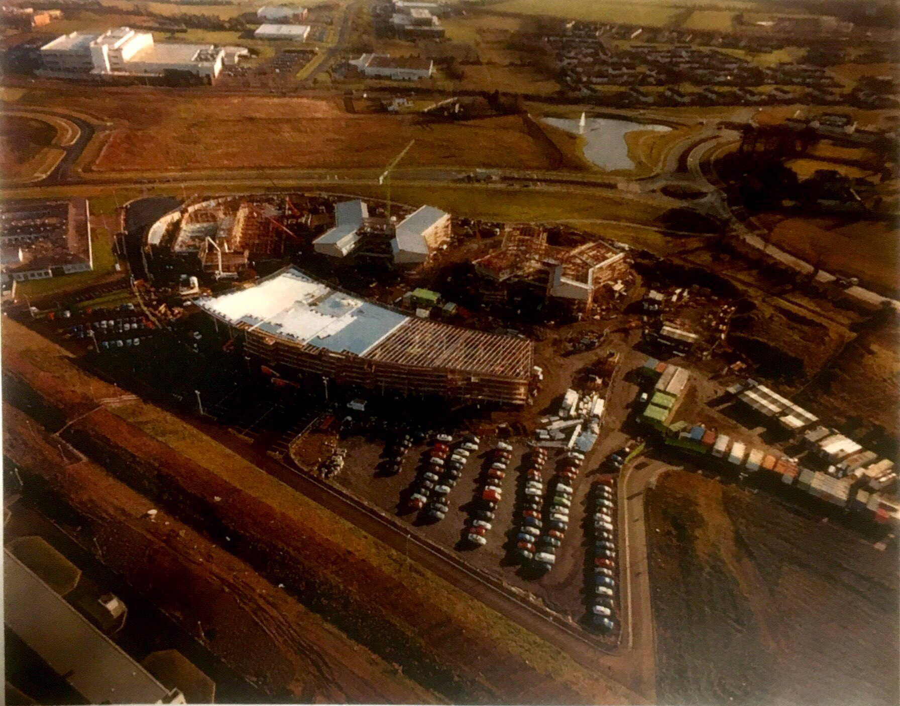
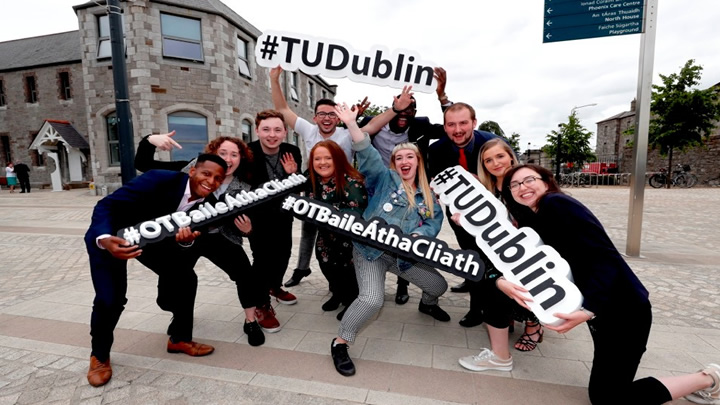

Story of ITB
Purpose of this page
The purpose of this page is to inform people about the entire history of the college and show off how the college has grown over the past 20 years, complete with slideshows with pictures of the timeline of important events within the college's life. The overall history of the college has been split into three 6-year periods, that will go more in-depth via the images below.
These sections are
The college's early years from 1999 to 2005.
The college's middle years from 2006 to 2012.
The college's later years from 2013 to 2019.
The main events of the college's history are
Its opening in 1999
Its first graduation in 2001
The creation of TU Dublin along with DIT and IT Tallaght that comes into effect on 1st January 2019.
Early years (1999-2005)
This page will detail the first 6 years of the college, and includes various images from that time period.
Middle years (2006-2012)

This page will detail the middle 6 years of the college, and includes various images from that time period.
Modern years (2013-2019)
This page will detail the last 6 years of the college, and includes various images from that time period.